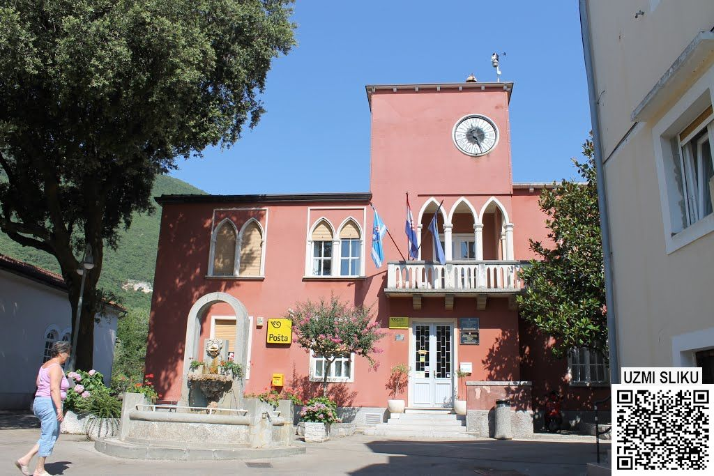
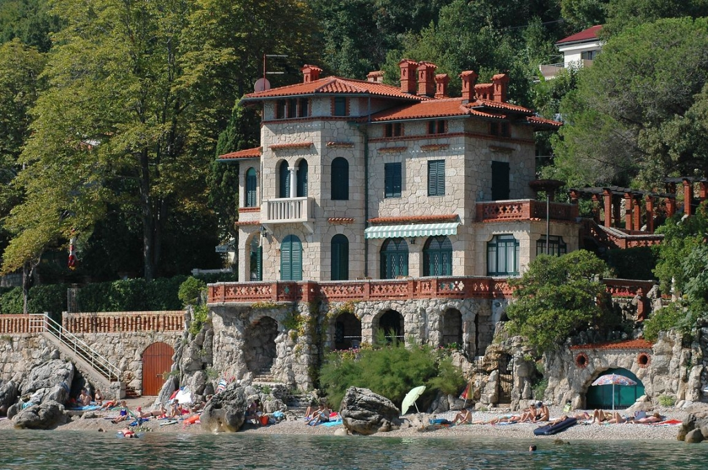

Općenito o Mošćeničkoj Dragi
Općina Mošćenička Draga proteže se od Medveje , pa sve do Zagorja , na području od 16 km. Ima 7 kamenih plaža, i bezbrojšumskih, odnosno planinskih puteva. Kraj je izrazito brdovit, a prostire se na 63 četvorna kilometra.
Svojim teritorijem debelo zarezuje u Park Prirode Učka.Sam položaj je veoma interesantan iz razloga što ima, osim klasičnog(primorskog) tipa turizma, i mogućnost seoskog koji bi se razvijao upravo na padinama Učke
Prema popisu iz 2011 ovdje živi 1535 stanovnika u 14 naselja – Brseč, Kraj, Golovik, Grabrova, Kalac, Mala Učka, Martina, Mošćenice, Mošćenička Draga, Obrš, Sučići, Sv. Anton, Sv.Jelena, Zagore.
Glavne gospodarske grane Općine su turizam i ribarstvo. Tradicija ribarskog zanimanja seže u prošlost do 19 stoljeća, dok se turizam naglo počeo razvijati neposredno nakon drugog svjetskog rata.
Prekrasne dvije plaže u Mošćeničkoj Dragi niz su godina glavni razlog ljetovanja mnogih stranih i domaćih turista.
Dražanski stari grad proteže se sve do mora gdje se u njegovom temelju ulegnula mala simpatična lučica u kojoj su smješteni ribarski brodovi, manje barke, i u ljetnim mjesecima mini marina za brodice turista.
Općina Mošćenička Draga razvija se u turističkom smislu održavajući klasični turizam plaže i mora, te tražeći nove resurse i destinacije za razvoj seoskog turizma sve u cilju kvalitenog i mirnog smještaja za turiste ljubitelje prirode i tradicijskih kulturnih vrijednosti.
Kliknite za izvor.

Zgrada općine Mošćeničke Drage
Stari grad nastao je krajem 19. stoljeća kada su se stanovnici grada Mošćenica i okolnih mjesta doselili na obalu uglavnom zbog ulova ribe. Ovo mjesto razvilo se kao ribarska lučica grada Mošćenica, što dokazuju i sačuvani zapisi iz 1436. godine u kojima se navodi mjesto na portu poli Sv. Marine. Gosti koji su boravili u Opatiji su kočijama odlazili na izlete u romantičnu Mošćeničku Dragu. Vile izgrađene u 19. stoljeću prve su nudile smještaje za noćenje, a obitelj Armanda je obilježila početak turizma otvaranjem hotela u centru Drage. Na temeljima tog povijesnog hotela sagrađen je hotel Draga, koji je prvo promijenio ime u Miramar potom u današnji Mediteran.
Villa "Zagreb"
Kratki video o cjelosti Mošćeničke Drage
Hvala Vam na čitanju !
Ukoliko želite iznajmiti privatnog turističkog vodiča kroz Mošćeničku Dragu i okolinu, možete nas kontaktirati na e-Mail ili telefon za više detalja, također moguće je ostaviti upit ovdje na stranici sa Vašim podacima: